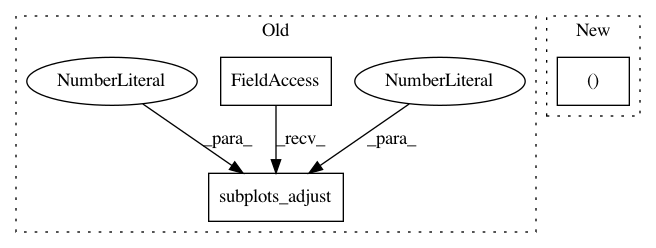

f25d4df0127537d57d4d7f7cd3fa52ca31ffa3ff,examples/03_connectivity/plot_signal_extraction.py,,,#,29
Before Change
x_ticks = plt.xticks(range(len(labels) - 1), labels[1:], rotation=90)
y_ticks = plt.yticks(range(len(labels) - 1), labels[1:])
plt.gca().yaxis.tick_right()
plt.subplots_adjust(left=.01, bottom=.3, top=.99, right=.62)
plt.suptitle("No confounds", size=27)
plt.show()
After Change
// Mask the main diagonal for visualization:
np.fill_diagonal(correlation_matrix, 0)
fig, ax = plt.subplots(1, 1, figsize=(10, 10))
plot_matrix(correlation_matrix, ax=ax, labels=labels, cmap="RdBu_r",
vmax=0.8, vmin=-0.8)
plt.title("No confounds", size=27)
In pattern: SUPERPATTERN
Frequency: 3
Non-data size: 3
Instances
Project Name: nilearn/nilearn
Commit Name: f25d4df0127537d57d4d7f7cd3fa52ca31ffa3ff
Time: 2017-07-28
Author: moritz.boos@uni-oldenburg.de
File Name: examples/03_connectivity/plot_signal_extraction.py
Class Name:
Method Name:
Project Name: has2k1/plotnine
Commit Name: df28557bb375fb4c0a3dea209cd0108719f72f9e
Time: 2015-04-20
Author: has2k1@gmail.com
File Name: ggplot/ggplot.py
Class Name: ggplot
Method Name: draw
Project Name: matplotlib/matplotlib
Commit Name: 618588dcf98a32cc2c8e3d9e766b416ca8f3c9ac
Time: 2018-07-06
Author: jklymak@gmail.com
File Name: examples/subplots_axes_and_figures/figure_title.py
Class Name:
Method Name: